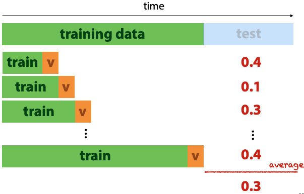

Models for sequential data
Sequences
They consists of numbers or symbols:
- numeric 1 dimensional, e.g. stock price over time. can be n-dimensional
- symbolic (categorical) 1-dimensional, like english sequence of words/characters. can be n-dimensional, with multiple categorical features per timestamp (like sheet music)
we could have one sequence per instance, and try to classify the sequences (like email spam/not spam)
or the whole dataset is a sequence, and instances are ordered.
single sequence feature extraction:
- make it a regression problem, each point is represented by the m values before it
- gives us a table with a target label (value at time t) and m features (the m preceding values)
- you could also use mean/variance statistics
- but shit: if the data is shuffled, the classifier is trained on data that comes from the future (relative to the test data)
major key: think about the real-world use case. e.g. if we want to predict future values, the training data shouldn't contain things that happen later than test data.
you can do walk-forward validation, if target labels have meaningful ordering in time:

When modelling probability, break the sequence into its tokens, like words in a sentence. Each token is modeled as a random variable (not independent).
So you end up with joint distribution P(W₄, W₃, W₂, W₁) (with some arbitrary number of parameters.
Can apply chain rule of probability:
i.e.: can rewrite probability of sentences as product of probability of each word, with condition on its history.
with log probability, you get a sum:
Markov models
Markov assumption: limit the amount of memory for previous tokens. e.g. retain a max of 2 words.
The "order" is the number of words retained in the conditional.
For example, if the conditional is and it's a third-order model, the Markov assumption is .
With Markov assumption and chain rule, can model sequence as limited-memory conditional probabilities. These can be estimated from a corpus (huge piece of text).
For example, to estimate prob of the word 'prize' given "won a", count how often "won a prize" occurs in text as proportion of total occurrences of "won a":
The word snippets are "n-grams". Three words is a trigram, two words is a bigram. I guess one word is just a gram. And maybe 1000 words would be a kilogram.
Sequential sampling: start with small seed of words, then sample next word according to its probability given the previous words.
Embedding models
Model object x by embedding vector ex. The similarities of these vectors represent similarities between words.
Creates embedding vectors for words, where distances and directions reflect semantic meaning.
Distributional hypothesis: words that occur in same context often have similar meanings.
1-hot vector: represent words as atomic objects in a monolithic vector
Word2Vec:
- slide context window over sequence, trying to predict distribution P(y|x) - which words likely to occur in context window given middle word
- create dataset of word pairs from text
- feed this dataset to two-layer network, which predicts context
- softmax activation over 10k outputs is expensive, so need some tricks to make it feasible
- after training, discard second layer (softmax) and only use embeddings produced by first layer
Recurrent neural networks
Neural network with cycles in it (used for sequences).
Can be used for:
- sequence to sequence, e.g. translating English to French
- sequence to label, e.g. sequence classification
- label to sequence, e.g. sentence generation
Example, fully connected network with input x extended by three nodes, to which the hidden layer is copied:
Visual shorthand:
- rectangle is vector of nodes
- arrow feeding into the rectangle annotated with a weight matrix means fully connected transformation
- if line doesn't have weight, it's a copy of input vector
- if two lines flow into each other, concatenate their vectors


Training RNNs:
- provide input seq x, target seq t
- backpropagation through time:
-
unroll:
- every step in seq is applied in parallel to copy of the network
- recurrent connection flows from previous copy to next
- the whole thing is a feedforward net (network without cyles)
- hidden layer inits to zero vector

-
Basic RNNs work well, but don't learn to remember information for a long time.
Can't have a long term mem for everything, need to be selective. In order to remember things long term, you need to forget a lot of other stuff (such is life).
LSTMs
"Long short-term memory".
Selective forgetting and remembering, controlled by learnable "gates". Side note, from now on I'm not "studying", but I'm "selectively forgetting and remembering".
The gating mechanism takes two input vectors, which are combined with sigmoid and tanh activations.
It produces an additive value -- want to figure out how much of input to add to some other vectors.
The tanh is like a mapping of input to range(-1, 1) -- limits the effect of the addition vector.
The sigmoid is like a selection vector.

Basic operation of LSTM is a "cell". There are two recurrent connections between cells: the current output y, and the cell state C.
I don't yet know how much detail we need to know about this, so I'll fill it in later based on exam questions.
The prof's summary: "incredibly powerful language models. Tricky to train, very opaque." Yep, opaque and complicated, indeed.